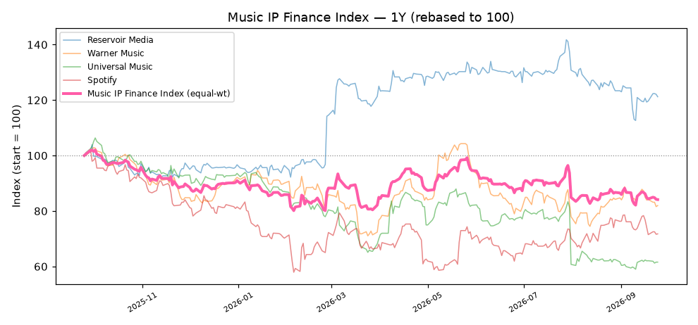

資料日期：2026-06-17 · 產生時間：2026-06-17 00:22 · 每日自動更新 · 🆕 = 近 7 天新資料
更新 2026-06-16 16:02 · 全文命中 51 筆（框內捲動）
臺灣高雄地方法院刑事裁定 114年度金重訴字第8號 公 訴 人 臺灣高雄地方檢察署檢察官 被 告 楊竣凱 選任辯護人 王振名律師 鄭瑋哲律師 上列被告因違反組織犯罪防制條例等案件，經檢察官提起公訴（ 114年度偵字第3548、8141、13364號），本院裁定如下： 主 文 楊竣凱自民國一百一十五年六月二十八日起延長限制出境、出海 捌月。 理 由 一、按審判中限制出境、出海每次不得逾8月，犯最重本刑為有 期徒刑10年以下之罪者，累計不得逾5年；其餘之罪，累計 不得逾10年；法院延長限制出境、出海裁定前，應給予被告 …
臺灣高等法院高雄分院刑事判決 115年度金上訴字第15號 115年度金上訴字第16號 上 訴 人 即 被 告 張云睿 現於法務部○○○○○○○○○○○執 行中 上列上訴人因詐欺等案件，不服臺灣高雄地方法院114年度審金 訴字第1032、114年度審訴字第658號，中華民國114年11月19日 第一審判決（起訴案號：臺灣高雄地方檢察署114年度軍偵字第2 號、114年度偵字第17033號），提起上訴，本院判決如下： 主 文 原判決關於刑之部分撤銷。 上開撤銷…
臺灣高等法院高雄分院刑事判決 115年度金上訴字第15號 115年度金上訴字第16號 上 訴 人 即 被 告 張云睿 現於法務部○○○○○○○○○○○執 行中 上列上訴人因詐欺等案件，不服臺灣高雄地方法院114年度審金 訴字第1032、114年度審訴字第658號，中華民國114年11月19日 第一審判決（起訴案號：臺灣高雄地方檢察署114年度軍偵字第2 號、114年度偵字第17033號），提起上訴，本院判決如下： 主 文 原判決關於刑之部分撤銷。 上開撤銷…
臺灣屏東地方法院刑事簡易判決 115年度金簡字第23號 公 訴 人 臺灣屏東地方檢察署檢察官 被 告 楊新乾 上列被告因違反洗錢防制法等案件，經檢察官提起公訴（113年 度偵字第12275號），因被告自白犯罪，本院認宜以簡易判決處 刑（原案號：114年度金訴字第42號），裁定由受命法官獨任逕 以簡易判決處刑，茲判決如下： 主 文 楊新乾幫助犯修正前洗錢防制法第十四條第一項之一般洗錢罪， 處有期徒刑參月，併科罰金新臺幣壹萬元，罰金如易服勞役，以 新臺幣壹仟元折算壹日。緩刑貳年，並應於本判決確定之日起伍 個月內向公庫支付新臺幣參萬元。 事實及理由 一、本件犯罪…
臺灣高等法院臺南分院民事判決 115年度金簡易字第13號 原 告 葉賜發 被 告 鍾尹宸 上列當事人間請求損害賠償事件，原告提起刑事附帶民事訴訟， 經本院刑事庭裁定移送前來（114年度附民字第797號），本院於 115年5月12日言詞辯論終結，判決如下： 主 文 被告應給付原告新臺幣46萬4,000元，及自民國114年12月9日起 至清償日止，按週年利率百分之5計算之利息。 訴訟費用由被告負擔。 事實及理由 一、被告經合法通知，未於言詞辯論期日到場，核無民事訴訟法 第386條各款所列情形，爰依原告之聲請，由其一造辯論而 為判決。 二、原告…
臺灣臺東地方法院刑事判決 115年度金簡上字第2號 上 訴 人 臺灣臺東地方檢察署檢察官 被 告 林育志 上列上訴人因被告違反洗錢防制法等案件，不服本院於中華民國 114年11月28日所為114年度金簡字第39號第一審刑事簡易判決（ 起訴案號：113年度偵字第5121號、113年度偵字第5410號），提 起上訴，本院管轄之第二審合議庭判決如下： 主 文 原判決關於緩刑部分撤銷。 Ａ１０緩刑肆年，並應於判決確定之日起參年內，依附表所示方式 給付損害賠償。 其餘上訴（宣告刑部分）駁回。 理 由 一、本院審理範圍之說明： 按上訴得明示僅就判決之刑、沒收或保安處…
臺灣臺東地方法院刑事判決 115年度金訴字第63號 公 訴 人 臺灣臺東地方檢察署檢察官 被 告 閻方 上列被告因詐欺等案件，經檢察官提起公訴（114年度偵字第367 3號、114年度偵字第4044號、114年度偵字第4306號、114年度偵 字第4414號、115年度偵字第344號），於準備程序中，被告就被 訴事實為有罪之陳述，經告以簡式審判程序之旨，並聽取當事人 之意見後，本院裁定進行簡式審判程序，判決如下： 主 文 Ａ３犯三人以上共同詐欺取財罪，處有期徒刑壹年玖月。未扣案之 犯罪所得新臺幣陸仟元沒收，於全部或一部不能沒收或不宜執行 沒收時，追徵其價額。 犯…
臺灣雲林地方法院刑事簡易判決 114年度金簡字第154號 公 訴 人 臺灣雲林地方檢察署檢察官 被 告 黃文慶 上列被告因違反洗錢防制法案件，經檢察官提起公訴（114年度 偵字第3194號），因被告自白犯罪，本院認為宜以簡易判決處刑 ，爰不經通常訴訟程序（原案號：114年度金訴字第541號），逕 以簡易判決處刑如下︰ 主 文 黃文慶幫助犯洗錢防制法第十九條第一項後段之洗錢罪，處有期 徒刑肆月，併科罰金新臺幣壹萬元，有期徒刑如易科罰金，罰金 如易服勞役，均以新臺幣壹仟元折算壹日。 事實及理由 一、黃文慶知悉社會上詐欺案件層出不窮，而詐欺集團為躲避追 查，使用…
臺灣雲林地方法院刑事判決 114年度金訴字第956號 公 訴 人 臺灣雲林地方檢察署檢察官 被 告 MUHAMMAD ALI IMRON（中文名：阿理） 上列被告因違反洗錢防制法案件，經檢察官提起公訴（114年度 偵字第4718號），本院判決如下： 主 文 MUHAMMAD ALI IMRON無罪。 理 由 一、公訴意旨略以：被告MUHAMMAD ALI IMRON（中文名：阿理） 可預見提供自己帳戶之金融卡及密碼等資料予他人使用，極易被 利用為與財產有關之犯罪工具，竟仍不顧他人可能遭受財產 上損害之危險，而基於縱若其金融機構之帳戶資料被…
臺灣雲林地方法院刑事簡易判決 115年度金簡字第43號 公 訴 人 臺灣雲林地方檢察署檢察官 被 告 楊建益 上列被告因違反洗錢防制法案件，經檢察官提起公訴（114年度 偵字第9635號），因被告自白犯罪，本院認為宜以簡易判決處刑 ，爰不經通常訴訟程序（原案號：115年度金訴字第84號），逕 以簡易判決處刑如下︰ 主 文 楊建益幫助犯洗錢防制法第十九條第一項後段之一般洗錢罪，處 有期徒刑肆月，併科罰金新臺幣肆萬元，有期徒刑如易科罰金、 罰金如易服勞役，均以新臺幣壹仟元折算壹日。緩刑貳年，並應 於緩刑期間履行如附表所示之調解筆錄內容。 事實及理由 一、犯罪事實…
臺灣雲林地方法院刑事簡易判決 115年度金簡字第90號 公 訴 人 臺灣雲林地方檢察署檢察官 被 告 吳建凱 上列被告因違反洗錢防制法案件，經檢察官提起公訴（114年度 偵字第12655號），被告於準備程序自白犯罪，本院認為宜以簡 易判決處刑，爰不經通常訴訟程序（原案號：115年度金訴字第3 60號），逕以簡易判決處刑如下︰ 主 文 Ａ０４幫助犯洗錢防制法第十九條第一項後段之一般洗錢罪，處有 期徒刑肆月，併科罰金新臺幣壹萬元，有期徒刑如易科罰金、罰 金如易服勞役，均以新臺幣壹仟元折算壹日。緩刑貳年，緩刑期 間付保護管束，並應於本判決確定之日起壹年內，接受法治教育 …
臺灣雲林地方法院刑事判決 115年度金訴字第153號 公 訴 人 臺灣雲林地方檢察署檢察官 被 告 林嘉轃 上列被告因違反洗錢防制法案件，經檢察官提起公訴（114年度 軍偵字第51號），本院判決如下： 主 文 林嘉轃幫助犯洗錢防制法第十九條第一項後段之一般洗錢罪，處 有期徒刑玖月，併科罰金新臺幣玖萬元，罰金如易服勞役，以新 臺幣壹仟元折算壹日。 犯罪事實 一、林嘉轃已預見向金融機構申設之帳戶係個人理財之重要工具 ，攸關個人財產、信用之表徵，若有一無深厚交情或堅強信 賴關係之人，無庸他人提供任何勞務、資金，卻以提供金融 帳戶及電信門號供對…
臺灣雲林地方法院刑事判決 115年度金訴字第330號 公 訴 人 臺灣雲林地方檢察署檢察官 被 告 李承道 上列被告因違反洗錢防制法等案件，經檢察官提起公訴（115年 度偵字第513號），被告於準備程序進行中就被訴事實為有罪之 陳述，經本院告知簡式審判程序之旨，並聽取被告及檢察官之意 見後，裁定進行簡式審判程序，判決如下： 主 文 Ａ０３共同犯洗錢防制法第十九條第一項後段之一般洗錢罪，處有 期徒刑陸月，併科罰金新臺幣伍萬元，有期徒刑如易科罰金，罰 金如易服勞役，均以新臺幣壹仟元折算壹日。 扣案之犯罪所得新臺幣壹仟元沒收。 事實及理由 壹、犯罪事實 Ａ０３…
臺灣雲林地方法院刑事判決 115年度金訴字第445號 公 訴 人 臺灣雲林地方檢察署檢察官 被 告 PHAM VAM TUAN(越南籍，中文姓名：范文俊) 現於內政部移民署中區事務大隊新竹收容所收容中 上列被告因違反洗錢防制法等案件，經檢察官提起公訴（115年 度偵緝字第244號），本院判決如下： 主 文 本件管轄錯誤，移送於臺灣臺中地方法院。 理 由 一、公訴意旨略以：被告PHAM VAM TUAN（下稱范文俊）明知金 融機構帳戶資料係供個人使用之重要理財及交易工具，關係 個人財產…
臺灣橋頭地方法院刑事判決 113年度金訴字第102號 114年度金訴字第95號 公 訴 人 臺灣橋頭地方檢察署檢察官 被 告 高崇偉 卓坤鈿 上列被告因詐欺等案件，經檢察官提起公訴（113年度偵字第915 6號、113年度偵字第13535號、113年度偵字第14509號）、追加 起訴（114年度偵字第4317號），本院判決如下： 主 文 高崇偉犯如附表編號1至4「主文」欄所示之罪，各處如附表編號 1至4「主文」欄所示之刑。應執行有期徒刑貳年柒月。未扣案之 犯罪所得新臺幣貳仟捌佰元沒收，於全部或一部不能沒收或不宜 執行沒收時，追徵其價…
臺灣橋頭地方法院刑事判決 113年度金訴字第102號 114年度金訴字第95號 公 訴 人 臺灣橋頭地方檢察署檢察官 被 告 高崇偉 卓坤鈿 上列被告因詐欺等案件，經檢察官提起公訴（113年度偵字第915 6號、113年度偵字第13535號、113年度偵字第14509號）、追加 起訴（114年度偵字第4317號），本院判決如下： 主 文 高崇偉犯如附表編號1至4「主文」欄所示之罪，各處如附表編號 1至4「主文」欄所示之刑。應執行有期徒刑貳年柒月。未扣案之 犯罪所得新臺幣貳仟捌佰元沒收，於全部或一部不能沒收或不宜 執行沒收時，追徵其價額。 卓坤鈿犯…
臺灣嘉義地方法院刑事判決 114年度金訴字第1536號 公 訴 人 臺灣嘉義地方檢察署檢察官 被 告 周星燦 上列被告因加重詐欺等案件，經檢察官提起公訴（114年度偵字 第7796號、114年度偵字第7797號、114年度偵字第8521號），本 院判決如下： 主 文 周星燦犯三人以上共同詐欺取財罪，共貳罪，各處有期徒刑壹年 。 扣案之iPhonel2 pro max手機1支沒收。 未扣案之犯罪所得新臺幣2,200元沒收，於全部或一部不能沒收 或不宜執行沒收時，追徵其價額。 犯 罪 事 實 一、周星燦於民國114年4月初某日瀏覽臉書社群網站之求職廣告 ，經與…
臺灣嘉義地方法院刑事判決 115年度金訴字第565號 公 訴 人 臺灣嘉義地方檢察署檢察官 被 告 黃淑芬 住彰化縣○○鎮○○里0鄰○○路○○巷000號 （另案於法務部○○○○○○○○○執行中） 上列被告因加重詐欺等案件，經檢察官提起公訴（115年度偵字 第2787號），被告於準備程序中就被訴事實為有罪之陳述，經本 院告知簡式審判程序之旨，並聽取公訴人、被告之意見後，本院 合議庭裁定由受命法官獨任進行簡式審判程序，判決如下： 主 文 黃淑芬犯三人以上共同詐欺取財罪，處有期徒刑壹年肆月。 未…
臺灣嘉義地方法院刑事判決 115年度金訴字第626號 公 訴 人 臺灣嘉義地方檢察署檢察官 被 告 陳沛其 上列被告因加重詐欺等案件，經檢察官提起公訴（115年度偵字 第566號、115年度偵字第1564號），被告於準備程序就被訴事實 為有罪之陳述，經本院告知被告簡式審判程序之旨，並聽取當事 人之意見後，裁定進行簡式審判程序，判決如下： 主 文 陳沛其犯三人以上共同詐欺取財罪，處有期徒刑壹年柒月。 事實及理由 一、犯罪事實： 陳沛其與真實姓名年籍不詳、通訊軟體SIGNAL暱稱「鴻海」 之成年人及其所屬之詐欺犯罪組織（下稱本案詐欺集團，陳 沛其所…
臺灣雲林地方法院刑事判決 114年度金訴字第526號 公 訴 人 臺灣雲林地方檢察署檢察官 被 告 郭佳明 上列被告因違反洗錢防制法等案件，經檢察官提起公訴（114年 度偵字第4643、4644、5091號），本院判決如下： 主 文 郭佳明犯如附表一編號1至3所示之罪，各處如附表一編號1至3所 示之刑（含沒收）。應執行有期徒刑壹年。 事 實 一、郭佳明意圖為自己不法之所有，基於加重竊盜之各別犯意， 於附表一編號1至3所示時間、地點、方式，為加重竊盜之犯 行（共二次得手、一次未得手）。 二、案經臺灣雲林地方檢察署檢察官偵查起訴。 理 由 壹…
臺灣雲林地方法院刑事裁定 114年度金訴字第888號 公 訴 人 臺灣雲林地方檢察署檢察官 被 告 林明正 上列被告因違反洗錢防制法等案件，經檢察官提起公訴（114年 度偵字第3832號）及移送併辦（114年度偵字第4053、5374、818 8號），前經辯論終結，茲因尚有應行調查之處，爰命再開辯論 ，特此裁定。 中 華 民 國 115 年 5 月 26 日 刑事第二庭 法 官 趙俊維 以上正本證明與原本無異。 本件裁定不…
臺灣橋頭地方法院刑事判決 112年度金訴字第2號 公 訴 人 臺灣橋頭地方檢察署檢察官 被 告 阮氏雪 選任辯護人 沈宗興律師 被 告 裴文維 鄭氏蓮 黎海銀 上三人共同 指定辯護人 吳俁律師 上列被告因違反銀行法案件，經檢察官提起公訴（110年度偵字 第4389號、111年度偵字第18404號），本院判決如下： 主 文 一、阮氏雪共同犯銀行法第125條第1項前段之非法辦理國內外匯 兌業務罪，處有期徒刑2年。緩刑5年，並應於本案判決確定 之日起1年內，向公庫支付新臺幣1…
臺灣新北地方法院刑事判決 112年度金訴字第301號 公 訴 人 臺灣新北地方檢察署檢察官 被 告 劉至聖 選任辯護人 温思廣律師 上列被告因違反證券交易法等案件，經檢察官提起公訴（110年 度偵續字第129號），本院判決如下： 主 文 劉至聖共同犯證券交易法第171條第1項第3款之特別背信罪，處 有期徒刑1年10月。又犯證券交易法第171條第1項第3款之特別背 信罪，處有期徒刑1年8月。應執行有期徒刑2年。 事 實 一、信億科技股份有限公司（下稱信億公司，原址設新北市○○區 ○○路0段00號6樓，現址設新北市○○區○○路000○0號3樓，民國 …
臺灣新北地方法院刑事判決 112年度金訴字第301號 公 訴 人 臺灣新北地方檢察署檢察官 被 告 何金錚 選任辯護人 許桂挺律師 上列被告因違反證券交易法案件，經檢察官提起公訴（110年度 偵續字第129號），本院判決如下： 主 文 何金錚共同犯證券交易法第171條第1項第3款之特別背信罪，共2 罪，各處有期徒刑1年6月。應執行有期徒刑1年10月，緩刑3年。 事 實 一、信億科技股份有限公司（下稱信億公司，原址設新北市○○區 ○○路0段00號6樓，現址設新北市○○區○○路000○0號3樓，民國 85年9月19日設立，90年7月18日公開發行，9…
臺灣新北地方法院刑事判決 114年度金訴字第2058號 公 訴 人 臺灣新北地方檢察署檢察官 被 告 鄭博豪 楊景安 上列被告因詐欺等案件，經檢察官提起公訴（112年度少連偵字 第220號），本院判決如下： 主 文 鄭博豪犯如附表二所示之罪，各處如附表二所示之刑（含沒收） 。應執行有期徒刑貳年陸月。 楊景安被訴部分均無罪。 事 實 一、鄭博豪於民國111年4月間加入由Ａ１３（業經本院另判處刑罰 ）、楊景安、Ａ１４（另結）、少年胡○俊、汪○穎（真實姓名 均詳卷，所涉詐欺等罪嫌，另由本院少年法庭審理）、通訊 軟體…
臺灣新北地方法院刑事判決 114年度金訴字第2255號 公 訴 人 臺灣新北地方檢察署檢察官 被 告 李正 選任辯護人 黃紘勝律師（法扶律師） 上列被告因詐欺等案件，經檢察官提起公訴（114年度偵字第28869 號），被告於準備程序中就被訴事實為有罪之陳述，經本院告以 簡式審判程序之旨，並聽取當事人及辯護人之意見後，裁定進行 簡式審判程序，判決如下： 主 文 李正犯三人以上共同詐欺取財罪，處有期徒刑拾月。未扣案如附 表所示之物沒收。 犯罪事實 李正與通訊軟體LINE暱稱「一生」等不詳詐欺集團成員（無證據 證明集團中有未成年人）共同意圖為自己不法之所有，基於…
臺灣新北地方法院刑事判決 114年度金訴字第2274號 公 訴 人 臺灣新北地方檢察署檢察官 被 告 顧懷恩 （現於法務部○○○○○○○○○○○○○○執行中） 指定辯護人 本院公設辯護人湯明純 被 告 鐘裕傑 籍設屏東縣○○市○○路000號（屏東○○○○○○○○○） 上列被告等因詐欺等案件，經檢察官提起公訴（114年度偵字第3 5915號），其等於準備程序中就被訴事實均為有罪之陳述，經告 以簡式審判之旨，並聽取當事人、辯護人之意見後，本院合議庭 裁定由受命法官獨任進行簡式…
臺灣新北地方法院刑事判決 114年度金訴字第2422號 公 訴 人 臺灣新北地方檢察署檢察官 被 告 陳宗進 （現於法務部○○○○○○○○○○○執行中） 上列被告因詐欺等案件，經檢察官提起公訴（114年度少連偵字第205號），其於準備程序中就被訴事實為有罪之陳述，經告以簡式審判之旨，並聽取當事人意見後，本院合議庭裁定由受命法官獨任進行簡式審判程序，判決如下： 主 文 陳宗進犯三人以上共同詐欺取財罪，累犯，處有期徒刑壹年參月 。 未扣案之如附件起訴書附表編號4所示對應之工作證及收據各壹 份，…
臺灣新北地方法院刑事判決 114年度金訴字第3438號 公 訴 人 臺灣新北地方檢察署檢察官 被 告 潘彥士 指定辯護人 本院公設辯護人湯明純 上列被告因詐欺等案件，經檢察官提起公訴（114年度偵字第49902 號），被告於準備程序中就被訴事實為有罪之陳述，經本院告以 簡式審判程序之旨，並聽取當事人及辯護人之意見後，裁定進行 簡式審判程序，判決如下： 主 文 潘彥士犯三人以上共同詐欺取財罪，處有期徒刑拾月。扣案如附 表編號2、3所示之物及未扣案如附表編號1所示之物均沒收。 犯罪事實 潘彥士與通訊軟體LINE暱稱「光輝歲月」、「順其自然」等不詳 詐欺集團成員（…
臺灣新北地方法院刑事判決 114年度金訴字第3466號 公 訴 人 臺灣新北地方檢察署檢察官 被 告 江正清 選任辯護人 黃仕翰律師 呂紹宏律師 李佳諺律師 上列被告因詐欺等案件，經檢察官提起公訴（114年度偵字第826 3號）及移送併辦（114年度偵字第27983號），本院判決如下： 主 文 江正清幫助犯洗錢防制法第十九條第一項後段之一般洗錢罪，處 有期徒刑參月，併科罰金新臺幣壹萬元，有期徒刑如易科罰金、 罰金如易服勞役，均以新臺幣壹仟元折算壹日。 犯罪事實 一、江正清可預見將自己銀行帳戶提供他人使用，依一般社會…
臺灣新北地方法院刑事簡易判決 115年度金簡字第193號 聲 請 人 臺灣新北地方檢察署檢察官 被 告 劉子容 上列被告因洗錢防制法案件，經檢察官聲請以簡易判決處刑（11 5年度撤緩偵字第23號），本院判決如下： 主 文 劉子容犯洗錢防制法第22條第1項、第3項第1款之無正當理由收 受對價提供第三方支付帳號及金融帳戶予他人使用罪，處有期徒 刑4月，併科罰金新臺幣1萬元，徒刑如易科罰金，罰金如易服勞 役，均以新臺幣1仟元折算1日。已繳回之犯罪所得新臺幣3仟元 沒收。 事實及理由 一、本案犯罪事實及證據，除證據並所犯法條欄一倒數第2行「1 14年3月3日函文」…
臺灣新北地方法院刑事判決 115年度金簡上字第19號 上 訴 人 臺灣新北地方檢察署檢察官 被 告 吳志輝 選任辯護人 鄭富方律師(法扶律師) 上列上訴人因被告詐欺等案件，不服本院115年度金簡字第29號 中華民國115年2月6日第一審刑事簡易判決（起訴案號：臺灣新 北地方檢察署114年度偵字第18850號），提起上訴，本院管轄之 第二審合議庭判決如下： 主 文 原判決撤銷。 Ａ０４共同犯洗錢防制法第十九條第一項後段之一般洗錢罪，處有 期徒刑參月，併科罰金新臺幣壹仟元，有期徒刑如易科罰金，罰 金如易服勞役，均以新臺幣壹仟元折算壹日。 事 實 一、Ａ０４知悉個人之…
臺灣新北地方法院刑事判決 115年度金訴字第1113號 公 訴 人 臺灣新北地方檢察署檢察官 被 告 劉健明 上列被告因詐欺等案件，經檢察官提起公訴（114年度偵字第506 63號），本院判決如下： 主 文 劉健明幫助犯洗錢防制法第十九條第一項後段之洗錢罪，處有期 徒刑陸月，併科罰金新臺幣貳萬元，有期徒刑如易科罰金，罰金 如易服勞役，均以新臺幣壹仟元折算壹日。 事 實 劉健明可預見將金融帳戶提供給不相識之人任意使用，可能因此遭 他人作為詐騙財物之犯罪工具，亦可能用以掩飾、隱匿詐欺取財 犯罪所得來源，或使詐欺犯罪者逃避刑事追訴，而移轉或變更詐欺 犯罪所得，仍基於幫助…
臺灣新北地方法院刑事裁定 115年度金訴字第127號 公 訴 人 臺灣新北地方檢察署檢察官 被 告 潘性佟 上列被告因詐欺等案件，經檢察官提起公訴（114年度偵字第411 87號），本院裁定如下： 主 文 本件延展至民國115年7月17日11時0分宣判。 理 由 一、按期日，除有特別規定外，非有重大理由，不得變更或延展 之；期日，經變更或延展者，應通知訴訟關係人，刑事訴訟 法第64條定有明文。 二、經查，被告潘性佟因違反洗錢防制法等案件，經檢察官提起 公訴（114年度偵字第41187號），由本院以115年度金訴字 第127號審理…
臺灣新北地方法院刑事判決 115年度金訴字第1298號 公 訴 人 臺灣新北地方檢察署檢察官 被 告 來俊良 上列被告因詐欺等案件，經檢察官提起公訴（114年度偵字第429 92號），本院判決如下： 主 文 Ａ０６幫助犯洗錢防制法第十九條第一項後段之洗錢罪，處有期徒 刑拾月，併科罰金新臺幣貳萬元，罰金如易服勞役，以新臺幣壹 仟元折算壹日。 事 實 Ａ０６可預見一般取得他人金融帳戶與虛擬貨幣帳戶常與財產犯罪有 密切關聯，亦知悉詐欺集團等不法份子經常利用他人存款帳戶提款 卡、密碼或網路銀行帳號密碼，以轉帳方式處理詐欺犯罪所得， 並藉此逃避追查，竟仍基於幫助詐欺取財及…
臺灣新北地方法院刑事判決 115年度金訴字第1343號 公 訴 人 臺灣新北地方檢察署檢察官 被 告 李明宗 住○○市○○區○○里0鄰○○路000巷0 弄0號0樓 （現於法務部○○○○○○○○羈押中） 上列被告因詐欺等案件，經檢察官提起公訴（115年度偵字第183 53號），被告於準備程序中就被訴事實為有罪之陳述，經本院裁 定進行簡式審判程序，並判決如下： 主 文 李明宗犯三人以上共同以網際網路對公眾散布而犯詐欺取財未遂 罪，處有期徒刑捌月。 扣案…
臺灣新北地方法院刑事判決 115年度金訴字第170號 公 訴 人 臺灣新北地方檢察署檢察官 被 告 洪柏佑 周承錩 上列被告等因詐欺等案件，經檢察官提起公訴（114年度偵字第2 0818號），被告等於準備程序中就被訴事實為有罪之陳述，經本 院告以簡式審判程序之旨，並聽取當事人之意見後，裁定進行簡 式審判程序，判決如下： 主 文 一、洪柏佑部分： ㈠洪柏佑犯三人以上共同詐欺取財罪，處有期徒刑拾月。 ㈡其餘被訴部分免訴。 二、周承錩部分： ㈠周承錩犯三人以上共同詐欺取財罪，處有期徒刑拾月。 ㈡其餘被訴部分公訴不受理。 犯罪事實…
臺灣新北地方法院刑事判決 115年度金訴字第362號 公 訴 人 臺灣新北地方檢察署檢察官 被 告 蔡仁平 上列被告因詐欺等案件，經檢察官提起公訴（115年度偵緝字第3 14號），因被告於準備程序中就被訴事實為有罪之陳述，經本院 告知簡式審判程序意旨，並聽取當事人之意見後，本院裁定進行 簡式審判程序，並判決如下： 主 文 蔡仁平犯如本判決附表主文欄所示之罪，各處如本判決附表主文 欄所示之刑。 事實及理由 一、本案被告蔡仁平所犯係死刑、無期徒刑、最輕本刑為3年以 上有期徒刑以外之罪，亦非屬高等法院管轄之第一審案件， 其於本院準備程序中就被訴事實為有罪…
臺灣新北地方法院刑事判決 115年度金訴字第398號 公 訴 人 臺灣新北地方檢察署檢察官 被 告 古若妤 上列被告因詐欺等案件，經檢察官提起公訴（114年度偵字第193 45號），本院判決如下： 主 文 古若妤犯三人以上共同詐欺取財罪，處有期徒刑壹年壹月，緩刑 參年。 事 實 一、古若妤於民國113年10月間在社群軟體Instagram上瀏覽求職 廣告，經點擊後連結加入通訊軟體LINE（下稱LINE）暱稱「 采萱」之真實姓名年籍不詳之人為好友，「采萱」再邀請古 若妤加入暱稱為「皇E樂享坊-B區」之群組，該群組係由真 實姓名年籍不詳…
臺灣新北地方法院刑事判決 115年度金訴字第423號 公 訴 人 臺灣新北地方檢察署檢察官 被 告 王俊傑 （現另案於法務部○○○○○○○○○○○執行中） 上列被告因詐欺等案件，經檢察官提起公訴（114年度偵緝字第3 338號），因被告於本院準備程序中就被訴事實為有罪之陳述， 經本院合議庭裁定由受命法官獨任進行簡式審判程序，並判決如 下： 主 文 王俊傑犯三人以上共同詐欺取財罪，處有期徒刑壹年陸月，併科 罰金新臺幣貳萬元，罰金如易服勞役，以新臺幣壹仟元折算壹日 。 事實及理由 一、本案犯罪事實及證據，除證據部分補充：被告…
臺灣新北地方法院刑事判決 115年度金訴字第568號 公 訴 人 臺灣新北地方檢察署檢察官 被 告 宋浩宇 指定辯護人 本院公設辯護人湯明純 被 告 洪梓綾 李立寬 （現於法務部○○○○○○○另案執行中 ，暫寄 押於法務部○○○○○○○○○○ ○） 上列被告因詐欺等案件，經檢察官提起公訴（114年度偵字第585 75號、115年度偵字第2495號），被告於準備程序中就被訴事實 為有罪之陳述，經本院裁定進行簡式審判程序，並判決如下： 主…
臺灣新北地方法院刑事判決 115年度金訴字第590號 公 訴 人 臺灣新北地方檢察署檢察官 被 告 劉智傑 YUEN WING MAN（中文名：袁永民） 李佳財 EASON SIET GUANG YI（中文名：薛光益） 上列被告因詐欺等案件，經檢察官提起公訴（114年度偵字第468 61、58311號、114年度少連偵字第319號、115年度少連偵緝字第 3號、115年度偵緝字第194、195、196號），被告於本院審判程 序中，就被訴事實為有罪之陳述，經本院裁定進行簡式審…
臺灣新北地方法院刑事判決 115年度金訴字第794號 公 訴 人 臺灣新北地方檢察署檢察官 被 告 郝家慶 上列被告因詐欺等案件，經檢察官提起公訴（115年度偵字第832 4、11191號），其於準備程序中就被訴事實為有罪之陳述，經告 以簡式審判之旨，並聽取當事人之意見後，本院合議庭裁定由受 命法官獨任進行簡式審判程序，判決如下： 主 文 郝家慶犯修正前詐欺犯罪危害防制條例第四十四條第一項第一款 之三人以上共同冒用政府機關及公務員名義詐欺取財罪，處有期 徒刑貳年。未扣案之如附表編號1、扣案之如附表編號2至4所示 之物均沒收；未扣…
臺灣新北地方法院刑事判決 115年度金訴緝字第49號 公 訴 人 臺灣新北地方檢察署檢察官 被 告 周建佑 (現於法務部○○○○○○○○執行觀察勒戒中） 上列被告因違反洗錢防制法等案件，經檢察官提起公訴（113年 度少連偵字第56號、112年度偵字第55131、55132、55305、5715 2、57162、57163號、113年度偵字第11654號），因被告於準備 程序中就被訴事實為有罪之陳述，經告知簡式審判程序之旨，並 聽取當事人之意見後，經本院合議庭裁定由受命法官獨任進行簡 式審判程序，判決如下： 主 文 Ａ１３犯如附表編…
臺灣彰化地方法院刑事判決 114年度重訴字第14號 公 訴 人 臺灣彰化地方檢察署檢察官 被 告 黃頎勳 上列被告因加重詐欺等案件，經檢察官提起公訴（114年度偵字 第2449、2450、10189、10280、10780、10789、10795、10796、 16741、16916、16923、17761號），被告於準備程序中就被訴事 實為有罪之陳述，經告知簡式審判程序之旨，並聽取當事人之意 見後，本院合議庭裁定由受命法官獨任進行簡式審判程序，並判 決如下： 主 文 黃頎勳犯詐欺犯罪危害防制條例第四十四條第一項第一款、第二 款之三人以上共同在境外以網際網路對公…
臺灣彰化地方法院刑事簡易判決 115年度金簡字第120號 公 訴 人 臺灣彰化地方檢察署檢察官 被 告 洪文傑 上列被告因違反洗錢防制法等案件，經檢察官提起公訴（114年 度偵緝字第1082、1083號），因被告自白犯罪，本院認宜以簡易 判決處刑，爰不經通常訴訟程序（原案號：115年度金訴字第36 號），逕以簡易判決處刑如下： 主 文 洪文傑幫助犯修正前洗錢防制法第十四條第一項之洗錢罪，處有 期徒刑參月，併科罰金新臺幣壹萬元，罰金如易服勞役，以新臺 幣壹仟元折算壹日。緩刑貳年，並應依附件二調解筆錄所示內容 如期履行損害賠償義務。 事實及理由 一、本案…
臺灣彰化地方法院刑事簡易判決 115年度金簡字第280號 公 訴 人 臺灣彰化地方檢察署檢察官 被 告 粘睿哲 上列被告因違反洗錢防制法等案件，經檢察官提起公訴（114年 度偵字第20458號），因被告自白犯罪，本院認宜以簡易判決處 刑，爰不經通常訴訟程序（原案號：115年度金訴字第348號）， 逕以簡易判決處刑如下： 主 文 粘睿哲犯幫助洗錢罪，處有期徒刑參月，併科罰金新臺幣參萬元 ，有期徒刑如易科罰金、罰金如易服勞役，均以新臺幣壹仟元折 算壹日。 事實及理由 一、本案犯罪事實及證據，除證據部分增列「被告粘睿哲於本院 準備程序中之自白」外，其餘…
臺灣彰化地方法院刑事簡易判決 115年度金簡字第338號 公 訴 人 臺灣彰化地方檢察署檢察官 被 告 DUONG VAN XUAN(中文名：楊文春，越南籍) 上列被告因違反洗錢防制法等案件，經檢察官提起公訴（115年 度偵緝字第313號、115年度偵緝字第312號），因被告自白犯罪 ，本院認宜以簡易判決處刑，爰不經通常訴訟程序（原案號：11 5年度金訴字第451號），逕以簡易判決處刑如下： 主 文 DUONG VAN XUAN幫助犯修正前洗錢防制法第十四條第一項之洗錢 罪，處有期徒刑肆月，併科罰金新臺幣壹萬元，罰金如易服勞役 ，以新臺幣壹仟元折算壹日…
臺灣彰化地方法院刑事簡易判決 115年度金簡字第343號 公 訴 人 臺灣彰化地方檢察署檢察官 被 告 施宗佑 上列被告因違反洗錢防制法等案件，經檢察官提起公訴（114年 度偵字第16141號），因被告自白犯罪，本院認宜以簡易判決處 刑，爰不經通常訴訟程序（原案號：115年度金訴字第403號）， 逕以簡易判決處刑如下： 主 文 施宗佑犯幫助洗錢罪，處有期徒刑參月，併科罰金新臺幣參萬元 ，有期徒刑如易科罰金，罰金如易服勞役，均以新臺幣壹仟元折 算壹日。緩刑貳年，並應依附記事項所示內容履行賠償義務。 事實及理由 一、本案犯罪事實及證據，除證據部分補充「被…
臺灣彰化地方法院刑事判決 115年度金訴字第172號 公 訴 人 臺灣彰化地方檢察署檢察官 被 告 劉芷均 選任辯護人 許智捷律師 上列被告因洗錢防制法等案件，經檢察官提起公訴（114年度偵 字第27525號），本院判決如下： 主 文 劉芷均幫助犯洗錢防制法第十九條第一項後段之一般洗錢罪，處 有期徒刑參月，併科罰金新臺幣參萬元，有期徒刑如易科罰金， 罰金如易服勞役，均以新臺幣壹仟元折算壹日。 犯罪事實 一、劉芷均明知金融機構帳戶為個人信用之表徵，並可預見將自己 所有之帳戶提款卡及密碼等帳戶資料提供他人時，極可能供 詐欺集團作為人頭帳戶，用以轉（匯…
臺灣彰化地方法院刑事判決 115年度金訴字第462號 公 訴 人 臺灣彰化地方檢察署檢察官 被 告 謝美貞 上列被告因違反洗錢防制法等案件，經檢察官提起公訴（114年 度偵字第2116號），本院判決如下： 主 文 謝美貞幫助犯修正前洗錢防制法第14條第1項之洗錢罪，處有期 徒刑肆月，併科罰金新臺幣貳萬元，罰金如易服勞役，以新臺幣 壹仟元折算壹日。 犯罪事實 一、謝美貞為成年人，依其智識程度及社會生活經驗，當知悉現 今社會詐欺案件頻傳，而詐欺集團成員為掩飾不法行徑，或 為隱匿不法所得，或為逃避追查並造成金流斷點，常使用他 人金融帳戶進行…
The Securities and Exchange Commission has appointed John Moses as Director of the agency’s Office of Investor Education and Assistance, which provides services and resources to help investors build their financial futur…
The Supreme Court issued an Order this morning denying certiorari in Newman v. Moore. The Court’s Order states that:…
By Kevin E. Noonan – At the beginning of June, the New Civil Liberties Alliance (representing Judge Paulene Newman) filed the Judge’s Reply Brief to the Federal Circuit Judicial Council’s Opposition to her Petition for C…
By Kevin E. Noonan – The Judicial Council of the Federal Circuit, represented by the U.S. Solicitor General, recently filed its Respondents’ Brief in Opposition to Judge Pauline Newman’s Petition for Certiorari. While th…
A nominally without-prejudice patent dismissal functioned as with prejudice under § 286, keeping Insulet's trade secret appeal in the Federal Circuit. Continue reading this post on Patently-O.…
新聞說因為Levi's並未贊助世界盃足球，因此相關場館必須遮掉商標，結果弄巧成拙，遮掉後的外觀（應該是故意收緊顯露輪廓）仍具有識別性（distinctiveness），變成更厲害的商業宣傳。新聞：https://www.yahoo.com/entertainment/articles/fifa-covered-levis-logo-world-183513547.html著名商標優勢一：關於著名商標的資訊如：https://www.us…
前言：MPEP 21732173.05(c) Numerical Ranges and Amounts Limitations...III. “EFFECTIVE AMOUNT”The common phrase “an effective amount” may or may not be indefinite. The proper test is whether or not one skilled in the art coul…
Sixteen months after USPTO's late-continuation surcharge took effect, data show a January 2025 rush and a sustained drop in long-EBD filings. Continue reading this post on Patently-O.…
The Supreme Court issued an Order this morning denying certiorari in Newman v. Moore. The Court’s Order states that:…
By Kevin E. Noonan – At the beginning of June, the New Civil Liberties Alliance (representing Judge Paulene Newman) filed the Judge’s Reply Brief to the Federal Circuit Judicial Council’s Opposition to her Petition for C…
By Kevin E. Noonan – The Judicial Council of the Federal Circuit, represented by the U.S. Solicitor General, recently filed its Respondents’ Brief in Opposition to Judge Pauline Newman’s Petition for Certiorari. While th…
Pending Fed. Cir. appeal Easlick v. AccEncyc pairs the plainly dissimilar design patent fight with a rare appellate test of Schedule A litigation. Continue reading this post on Patently-O.…
China has no UPC Patent Mediation and Arbitration Centre equivalent. Its relevant pathways are more dispersed. This article maps those pathways and explains how they may matter in Chinese patent disputes.…
As predicted by ip fray, InterDigital has won an 11-country HEVC injunction against Disney's streaming services. Three German injunctions did not lead to a settlement, but this one might.…
The 14th edition of this event will be held in the DPMA Forum, Munich next week. ip fray plans to cover the conference during and after it takes place.…
In a statement to ip fray, Infineon said China’s Supreme People’s Court decision concerned preliminary injunction relief and that the main proceedings remain ongoing.…
Section 271(b) of the U.S. Patent Act states that “[w]hoever actively induces infringement of a patent shall be liable as an infringer.” Earlier this month, the U.S. Supreme Court issued its decision in Hikma v. Amarin,…
Malikie asserted some of the same former Blackberry patents against Honda and Hyundai in U.S. district courts last month.…
Editor's note: This will be my last post before going on holiday. I plan to resume blogging the week of June 15. This weekend, however, I am pleased to present a guest post by Roya Ghafele of OxFirst, discussing her upco…
One of my upcoming projects is to write something on trade secret damages—with a primary focus on U.S. law, where in the past few years we have seen a number of very high damages awards (in the nine and even ten-figure r…
In a recent decision under the Uniform Domain Name Dispute Resolution Policy (UDRP or the Policy) before the World Intellectual Property Organization (WIPO), a Panel denied a UDRP Complaint for the transfer of the disput…
Ex parte reexamination has recently overtaken inter partes reviews (IPRs) in terms of popularity. Petitions for IPRs have fallen dramatically since late 2025, with only 15 petitions filed in April of this year....By: Are…
The Federal Circuit held that the district court erred by precluding plaintiffs from pursuing unjust enrichment damages for trade secret misappropriation claims....By: ArentFox Schiff…
In a precedential but divided decision, the Federal Circuit recently erased Insulet Corporation’s trade secret victory against EOFlow, holding that the company filed suit too late. The panel reversed a $452 million jury…
United States intellectual property law (known as “IP” law) is a three-legged barstool consisting of patents (protecting new and useful inventions), trademarks (protecting brand names, logos, and slogans), and copyrights…
Patent statistics are frequently cited as evidence of China's growing technological strength, but patent counts by themselves do not address qualitative concerns. Moreover, they often measure much more than innovation al…
was asked to testify before the Senate Judiciary Committee on April 22, 2026. The link is here: https://www.judiciary.senate.gov/committee-activity/hearings/stealth-stealing-chinas-ongoing-theft-of-us-innovation-04-22-20…
This blog reviews Zhao Ye’s report on trade secret adjudication by the SPC IP Tribunal. Based on 11 published cases from 2025, the report highlights a sharp increase in damages, systematic reversal of lower court decisio…

| 標的 | 價格 | 近1年 |
|---|---|---|
| Reservoir Media RSVR | 10.18 | +36.6% |
| Warner Music WMG | 28.85 | +8.1% |
| Universal Music UMG.AS | 18.10 | -34.3% |
| Spotify SPOT | 467.24 | -34.7% |
| 音樂 IP 金融指數 INDEX | — | -6.1% |
The 14th IP & Competition Forum offers a series of highly topical online sessions on the changing architecture of global patent litigation, enforcement, licensing and competition policy. Register for ALL ONLINE sessions…
Non-fungible tokens (NFTs) are transforming the commercialisation of digital art by establishing unique blockchain identifiers that ensure authenticity and certify subsequent transactions. However, the transfer of contro…
As the internet thrives on the circulation of easily copied content, ensuring attribution is properly given has been a perennial challenge. Following the rise of synthetic media and generative AI tools, and corresponding…
Although the digital media ecosystem has changed creation and sharing of content, existing copyright management systems suffer from inefficiencies, such as slow payment of royalties, a lack of transparency about how much…
NFT (Non-Fungible Token) art, fueled by blockchain technology and its connection to virtual currencies, gained significant attention beyond the art world. However, after peaking in 2021, interest and trading activity dec…
This research examines how blockchain technology can address long-standing challenges in digital rights management (DRM) within the entertainment industry and emerging Metaverse environments. By leveraging decentralized…
Abstract Non-Fungible Tokens (NFTs) are blockchain-based digital assets that provide verifiable proof of ownership and authenticity. Despite their rapid proliferation, NFT markets face ongoing challenges related to user…
Decentralization and distributed storage capabilities of blockchain technology are important features of the technology which are relevant in many applications to intellectual property (IP) rights. The current advancemen…
Digital Art is a comparatively new form of artistic expression which utilizes digital technology as a primary platform to create these artworks which predominantly exist in the cyberspace, with no physical form. Thus, su…
(Slip Opinion) OCTOBER TERM, 2025 1 Syllabus NOTE: Where it is feasible, a syllabus (headnote) will be released, as is being done in connection with this case, at the time the opinion is issued. The syllabus constitutes…
PRELIMINARY PRINT Volume 601 U. S. Part 2 Pages 366–376 OFFICIAL REPORTS OF THE SUPREME COURT May 9, 2024 Page Proof Pending Publication REBECCA A. WOMELDORF reporter of decisions NOTICE: This preliminary print is subjec…
UNITED STATES DISTRICT COURT FOR THE DISTRICT OF COLUMBIA _________________________________________ ) STEVEN LEONEL ARIAS, ) ) Plaintiff, ) ) v. ) ) Case No. 21-cv-02551 (APM) UNIVERSAL MUSIC GROUP…
20-3816 ABKCO Music, Inc. v. Sagan 1 UNITED STATES COURT OF APPEALS 2 FOR THE SECOND CIRCUIT 3 ____________________ 4 5 August Term, 2021 6 7 (Argued: March 14, 2022 Decided: October 6, 2022) 8 9 Docket Nos. 20-3816(L),…
This paper reviews research on blockchain governance under geopolitical conflict. Drawing on information systems, economics, and management, it identifies three interrelated forces shaping governance: technological desig…
Research on innovation resistance has revealed various barriers to the use of digital technologies. However, these studies are typically constrained to siloed perspectives, which prevent comparisons between digital techn…
This paper examines how power centralizes in ostensibly decentralized blockchain communities. Drawing on a three-year digital ethnography of “Renada,” a non–VC-backed, community-run blockchain project, it analyzes how go…
Large language models are evolving into autonomous agents that collaborate across organizations for tasks like disaster response and supply-chain optimization. However, such cooperation breaks unified trust assumptions:…
Abstract Artificial Intelligence raises questions about the "material" it uses and who inputs it, its veracity or falsity, its ability to incorporate innovations or crystallize thought. One economics author (Chamberlain)…
This research uses a multi-source dataset comprising both on-chain blockchain data and off-chain social data from Decentralised Autonomous Organisations (DAOs). The quantitative component includes longitudinal panel data…
Decentralized autonomous organizations (DAOs) are entities without central leadership and operate based on a set of decision-making rules encoded into smart contracts using blockchain technology. In this study, we develo…
Interfacing Artificial Intelligence (AI) with democracy is one of the most profound challenges of our times. On the one hand, AI comes with opportunities to overcome long-standing challenges in democracy, such as low par…
IN THE COURT OF CHANCERY OF THE STATE OF DELAWARE HASH ASSET MANAGEMENT LTD., ) ) Plaintiff, ) ) v. ) C.A. No. 2025-0374-BWD ) DMA LABS, INC., ICHI ) FOUNDATION, NICK POORE, ) BRYAN GROSS, TYLER CHRISTIAN ) PINTAR, and J…
Filed 1/15/25 CERTIFIED FOR PUBLICATION IN THE COURT OF APPEAL OF THE STATE OF CALIFORNIA FIRST APPELLATE DISTRICT DIVISION TWO PARAFI DIGITAL OPPORTUNITIES LP et al., Plaintiffs and Appellants, A168960 v. (San Francisco…
Case: 23-50669 Document: 123-1 Page: 1 Date Filed: 11/26/2024 United States Court of Appeals for the Fifth Circuit United States Court of Appeals Fifth Circuit ____________ FILED November 26, 2024…